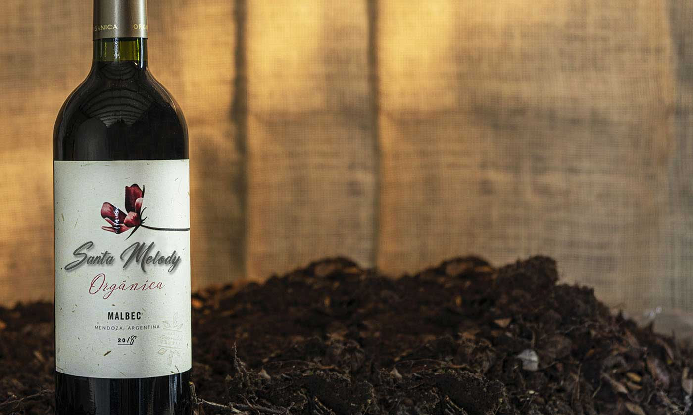

🍇 Santa Melody Orgánico
Nuestra línea de vinos orgánicos proviene de viñedos certificados, y expresa nuestra misión de enfocarnos en la agricultura sostenible, respetando el medioambiente y la biodiversidad de la zona.

Contamos con las siguientes variedades:
Malbec - Cabernet Sauvignon - Tempranillo - Malbec Rosé - Torrentés - Chardonnay